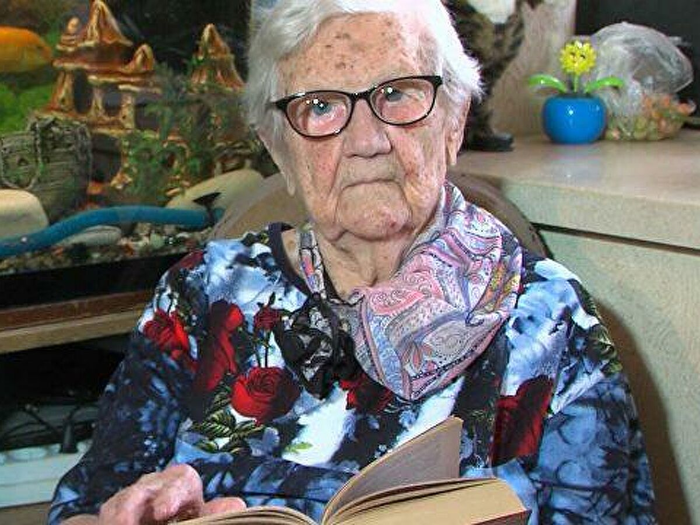
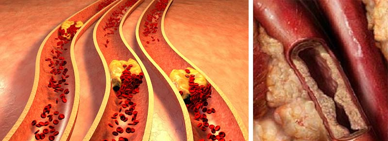

«Szeretnék élni 150 évig!» Híres hosszú életű nő elmesélte minek a segítségével hosszabbítja meg az életét
Mezőkövesdi lakós, Holló Gizella született Magyarországon 1896-ban, túlélte a forradalmat, kettő világ háborút, rendszerváltást, megélte kormányfők tizedeit. A Magyarország rekord könyvében ő be van jegyezve, mint mai napon élő a világ legidősebb emberként – március 14-én a nagymama betöltötte 120 évet.
Gizella túlélte nem csak vele egyidőseket, de még sokuknak a gyerekeiket is.
Nagymama, sőt, már déd nagymama is rendszeresen jár az orvosi vizsgálatokra. Minden évben az orvosok ugyanazt mondják: teljesen egészséges, akár holnap lehet az űrbe küldeni.
Annak ellenére, hogy ilyen hosszú élete van, Gizi néni ritkán hagyta el a faluját és mindig nemet mondott, mikor a gyerekei felajánlották neki, hogy költözzön el a városba. Azt gondolták, végül is korban van. De a mi hosszú életű Gizella nénénknek a kor nem akadály semmiben sem.
Gizella néni él egy nagy fa házban, melyet még a néhai férje építette. Nagy mama oda figyel a házára. Ezen kívül van egy kertje – 100 m2, melyet minden évben bevet. És még a Gizi nénének vannak házi állatai: tehén, néhány kecske és tyúkok. És mindezekre a nagy mamának van ereje.
Eljöttünk a hosszú életű nagy mamához, hogy interjút készítsünk vele és megtudjuk a fő titkát – hogyan lehet ilyen sokáig élni egészségesen. Már az pampuskával megterített asztalnál ülve megértettük, hogy Gizi nénénél sok a dolga így is nálunk nélkül. Nem szeretnénk sokáig feltartani őt a kérdéseinkkel, ezért egyből azzal kezdünk, amiért eljöttünk.
- Gizi néni, Ön ilyen hosszú életet élt le. Sokkal többet, mint bárki. Hogyan sikerült ez Önnek?
- Igen, én már számtalan szór mindenkinek elmondtam, aki ezt a kérdést feltett nekem (újságírók rendszeresen látogatják a hosszú életű nagy mamát). Minden a tiszta erekben rejlik. Erre engem még István tanított a háború előtt. István a falunkban élt, természet gyógyász volt. Hozzá járt az egész falu gyógyulni, de még más falukból is jártak. Háborúba elvitték katonákat gyógyítani, és nem jött vissza. Mi akkor szomszédban vele laktunk.
Esténként együtt a hegyen üldögéltünk. Társalogtunk. Akkor el is mesélte, hogyan és mint kell csinálni. Akkor volt egy húgom. Problémái voltak az egészséggel. Szüleink kezelték az ereit ésígy meg is gyógyult. Azóta mi rájöttünk, hogy az erek – a legfontosabb, amire ügyelni kell. Azóta az egész családunk erre oda figyel. Igaz, a szüleink tragikusan elhunytak még 87-ben. A húgom is sokáig élt, de kevesebbet, mint én. 95 éves korában hunyt el. Én a gyerekeimnek is szintén mindig utasításokat adtam, hogy oda kell figyelni az erekre.
Ezért is a hosszú élet titka az erekben rejlik, őket tisztítani kell időről időre. De ezt senki nem teszi meg, ezért is keveset élnek. Főleg a városi nyugdíjasokról van szó. Szeretnek nagyon tablettákat szedni és azt gondolni, hogy ez segít. Én mikor a városban voltam az unokámnál, nagyon meglepődtem ezen. Mindenki beteg már 60 évesen. Így segítenek ezek a tabletták. Kémia az egész. De, ha tisztították volna az ereket, akkor egészségesek és aktívak lennének, mint én.
- Gizi néni, mit gondol, ha egy ember rossz egészségi állapotban elkezdi tisztítani az ereket, tudná tovább élni?
- Persze! Hogyan másképp? Gondolkodjanak el rajta. Ereken át folyik a vér, minden szerv számára táplálék. Minél jobb a táplálék, annál egészségesebbek a szervek. Az ember egészsége az erek egészségétől kezdődik. De az erek idővel elszennyeződnek, Hiszen a vérben is lehet szennyeződés és minden fajta nem feldolgozott anyagok, melyek lerakodnak az erekben. Egyszerűen nincs más helyük. Erek végeredményben elszennyeződnek, mintacsövek rozsdával. A vér nem jut el a belső szervekhez. Végül a szervek éheznek és megbetegszenek. Vese, gyomor, máj vagy a húgyhólyag – minden szenved a rossz vérkeringéstől. Még a fej is. Képzeljék el, ha például, én nem fogom etetni normálisan a tehenet. Neki is minden elkezd fájni azonnal!
Ha, pedig, a vérkeringést feljavítani, a szervek visszaállnak. Lehet, hogy az ember, persze, nem is él olyan sokáig, mint én, de biztosan, hogy tovább fog élni. 3, 5, lehet, hogy még 10 évvel is. Ezelőtt mindenki így gyógyult, mikor a tabletták sehol nem voltak, és mindenki egészséges volt.
Pont most eszembe jutott egy történet. Írt nekem egy asszony Budapestről. A férje szörnyen szenvedett a hipertóniától. Néhány infarktus előtti állapot. Az orvosok azt mondták, hogy sokáig nem fog élni. Javasolták, hogy vegyenek egy helyet a temetőben. Az asszony engem kérdezett, mivel lehet kezelni a férjét. Hát ha tudok valamilyen titkot. Azt javasoltam, hogy tisztítsák meg az ereit. Más titkokat nem ismerek. Azóta eltelt több, mint 10 év. A férfi egészséges és egyáltalán nem jelentkezik nála a hipertónia. Ők az egész családdal együtt tisztították az ereket ezek után. Engem, pedig, most már minden évben felköszöntik a születés napomon. Amúgy sok ilyen történetem lenne.
Engem az újságírók gyakran ugyanerről kérdezték, én nekik is ugyanazt válaszoltam. De láthatólag, engem senki nem hallgat meg. Kár! Ha tisztítsunk az ereinket, akkor sokáig lehet élni és főleg, egészségesen! Hiszen betegen sokáig élni sem jó.

Egészségügyi Világszervezet adatai alapján (EVSZ) erek szennyeződése okként szolgálnak a különböző megbetegedések fejlődésében: emésztő rendszer megbetegedésektől a látás romlásig.
- És Ön hogyan tisztítja az ereit? Saját magának? Meg tudná osztani az olvasóinkkal ezt a receptet?
- Korábban magam tisztítottam. Direkt ehhez növényeket készítettem. Ezelőtt több erőm volt erre. Magam elmentem az erdőbe és a mezőre a megfelelő időben, szárítottam, utána elkészítettem. Az erek tisztítását egyszer 2 évben végeztem el. Gyakrabban nem kell, mivel az erek nem szennyeződnek el korábban. De most már a növényeket nem szedem magam. Ehhez erdőbe kell menni, de csak egy bizonyos időben. Sok a kín vele.
Már 15 éve, hogy nem csinálom ezt. Az idősebbik lányom Németországban él. Ő rendeli nekem egy készítményt, melyet a futár elhozza. Azzal a készítménnyel tisztítom az ereket. Zita, postásként dolgozik itt nálunk, mindig elhozza nekem a házamhoz. Eza készítmény még jobban segít, minta növényeim. Meg hát, értik, nincs már erőm szedni őket. Hiába egészséges vagyok, dea kor akkor is jelen van. Öregkort lelehet lassítani, de megállítani nem lehet.
- És mi a neve ennek a készítménynek?
- Hú, nem is emlékszem már. Csak arra emlékszem, milyen színű a csomagja. Piros. De már kidobtam. És mi a neve, azt jobb, ha a lányomat megkérdezik. Megadom a telefonszámát, önök felhívják és megkérdezik. Igaz, hogy Németországban él, biztos, hogy sokba fog kerülni a hívás…
Gizi néni sokáig keres valamit a szomszédos szobában. Utána hozza magával egy nagyon elhasználódott régi füzetet – a nagy mama úgy, mint régen bele szokott írni a telefonszámokat.
Úgy döntöttünk, hogy felhívjuk a Gizi néni lányát Németországban és rá kérdezünk a készítményre. A lánya azt mondta, hogy valóban szokta kiíratni egy készítményt az erek tisztításához, de a készítmény nem német gyártású, hanem magyar. Német készítményeket nem is lehet külföldre küldeni az engedélyek nélkül. A magyar készítmény neve pedig, .
Eldöntöttünk, hogy rá kérdezünk erről a készítményről és egyáltalán az erek tisztítási folyamatáról, mennyire hasznos, az orvost. A kérdéseinkre választ kaptunk Dr. Németh István, vezető kardiológus, főorvos Kardiológiai rehabilitációs centrumban Balatönfüreden.

- Dr. Németh István, mondja, valóban hasznos dolog az erek tisztítása?
Idő előre haladtával egyre több orvos ahhoz arra a következtetésre jut, hogy ez valóban rendkívülien hasznos kezelés, mely képes nem csak meghosszabbítani az élet tartamát, de meg is javítani az ember egészségét. Jelenleg, ide értve a külföldi kezeléseket is, különböző megbetegedések kezelése (például, vese és máj megbetegedések) gyakran kiegészül ér tisztítási terápiával. Mert a koleszterinnel eldugult erek – ez nagyon rosszul hat az egészségre! És itt nem is beszélek azokról a páciensekről, akik rendelkeznek szív és ér rendszeri megbetegedésekkel, vagy,például hipertóniával. Nekik kötelezően kell tisztítani az ereket.
- Hogyan történik az erek tisztítása készítmény segítségével?
- Jelen készítmény tartalmazza E-vitamin különleges formáját, melyet úgy nevezik, hogy alfa-tokoferol. Ez az anyag képes bejutni a koleszterin molekulái belsejébe és felbomlasztani azokat belülről. A készítmény által gy kezelési kurzus elvégzésével végeredményben az erek teljesen megtisztulnak a falon lévő koleszterin lerakodásoktól ,azon kívül, a trombok is feloldódnak. Esetek 96%-ban az erek tisztítása után a pácienseknél normalizálódik a vérnyomás.
Szeretnék mutatni egy statisztikát a készítmény alkalmazásáról átlagos páciensek által a klinikánkon. Mi gondosan lefixálunk a kezelés eredményeket. Összesen által nálunk gyógyult körülbelül 10000 páciens. Itt az eredmények:
— Vérnyomás teljesen normalizálódott (hipertónia elmúlt) – megkérdezettek 98%
— Szív ritmus normalizálódott – megkérdezettek 97%
— Fej fájások elmúltak – megkérdezettek 99%
— Látás javulás – megkérdezettek 74%
— Megnőtt a krónikus megbetegedések kezelési hatékonysága – megkérdezettek 92%
— Jelentős egészség állapot javulása teljes egészében- megkérdezettek 99%
Vagyis, ahogy azt önök is látják, az eredmények nagyszerűek. De ebben nincs semmi meglepő.
Maga ki van fejlesztve vezető magyar intézet által NII Klinikai kardiológia. Alfa-tokoferolon kívül a készítmény tartalmazza még körülbelül 50 a szívre és az erekre vitamint, makro és mikroelemeket. Felsorolom néhányat közülük
—Vitamin C - Megerősíti és tonizálja az erek falait. Csökkenti az aterosklerosis és hipertóniai krízis alakulásának az esélyét.
—Vitamin A- Normalizálja az apró kapillárisok áteresztő képességét
—Vitamin B1- Megerősíti a szív izmot. Megakadályozza az infarktus kialakulását.
—Vitamin B2- Megemeli az oxigén tartalmát a vérben.
—Vitamin B3- Kibővíti az ereket, csökkenti a vérnyomást azonnal a bevétel után.
—Vitamin B12- Javítja a vér alvadási képességét.
—Kálium - Kivezeti fölösleges folyadékot a szervezetből.
—Nátrium- Csökkenti az ödémát, mely gyakran fordul elő a hipertóniásoknál.
—Foszfor- Megemeli az erek tónusát, stabilizálja az idegrendszer működését.
—Kalcium - Csökkenti a hipertóniai krízis és infarktus kialakulásának az esélyét .
- Holló Gizella asszony azt mondta, hogy a -t házhoz szállítással rendeli. Ez így van? Meg lehet rendelni a készítményt?
- Igen, ez igaz lehet. Amennyire én tudom, jelenleg a készítményt NII Klinikai kardiológia terjeszti elő. A készítményt meg tudja rendelni minimális áron bárki, aki Magyarországon él. A készítmény megrendeléséhez nem kell semmilyen igazolás – elegendő beadni a kérelmet a speciális weboldalon. -t házhoz szállítják az egész ország területén, szállítás ingyenes.
Mindenkinek, aki szeretne megtisztítani az ereket, javaslom megcsinálni ezt. Közérzet és az egészség egészében feljavul a jelen kezelés után mindenkinél.
Egyetlen dolog, amiről szeretnék figyelmeztetni, hogy ebben az évben a Magyar Egészségügyi Minisztérium nem különítette el szükséges összeget az egészségügyi programra alakosság körében, mely elindult még 2014 évben. Azt mondják, nincs elegendő pénz forrás. Ezért most szétosztják még a tételből megmaradt készítményt , melyet bevásárolták még tavalyi évben. A tétel gyorsan fogy. Ezért azoknak, aki szeretne megtisztítani az ereket, javaslom minél hamarabb megrendelni, még nem rendeltek meg mások.
Figyelem!
A nagyszámú pályázat miatt korlátozni kell a kampány idejét! A jelenlegi szakasz A kampány végéig az eredeti terméket "" mindenki megrendelheti a hivatalos weboldalon keresztül, 50% kedvezménnyel!
Nemesi Mária
Nagyon szépen köszönöm az érdekes interjút. -t megrendeltem.
Tóth Flóra
Kiváló készítmény. Teljesen egyet értek önnel. Ezelőtt mindig fájt valamim, hol ez, hol az. Ahogy elkezdtem tisztítani az ereket segítségével, sok nyavalyám elmúlt. Mindenkinek ajánlom!
egy órával ezelőtt
Keskeny Regina
Én is tisztítottam az ereket ezzel a készítménnyel. Egy ismerős kardiológus ajánlotta a hipertónia kezelésére. 63 éves vagyok. Vérnyomásom emelkedik 53 éves korom óta. Utóbbi időben az ingadozások erősebbek és gyakoribbak lettek. Ismerős orvos (gyerekkori barát) elmesélt erről a programról és javasolt kiíratni a készítményt 3 hónappal ezelőtt. Most vérnyomásommal minden rendben van. A készítmény egy csoda.
Hetényi Péter
Nekem is segített. Régóta vagyok hipertóniás – már 7 éve szenvedek ettől a betegségtől. Már azt hittem egész életemben tablettákon fogok élni, de végeredményben a kurzus után a vérnyomásom már nem emelkedett egyáltalán. Mindenkinek ajánlom – segíteni fog!
Óvári Petra
Köszönöm szépen a nagy mamának azért, hogy ezt az egészet elmesélte .
Suha Róbert
Köszönöm. Nagyon érdekes. Megrendeltem. Azt ígérték, hogy 5 nap múlva megkaphatom a postán . Nagyon remélem.
Csanády Katalin
Nekem bejött a Kezeltem magam vele még tavalyi nyáron. Hipertónia elmúlt! Nincsenek semmilyen tünetek és vérnyomás ingadozások. Magam is meglepődtem. Érzem magam minden 5+-ra.
Károly Ferenc
Megrendeltem a a megjelölt oldalon. Öröklődő hipertóniám van, már 3 szintű. Állandóan gyógyszereken éltem. A vérnyomásom lejjebb, mint 180/110 -re ritkán csökkent. Most teljesen normalizálódott a . szedése után. Ez egy valódi megmenekülés!